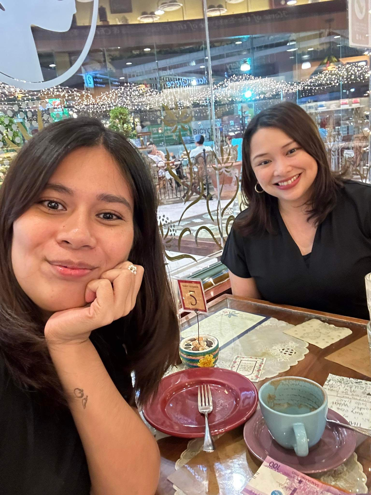

Invest in yourself
Personal styling
Christian Life Coaching

I'm the founder and Chief Stylist behind Leap Into Style. I believe that style is more than just clothes. It's sharing your story, the person behind the clothes. I help you create a personal style that speaks volumes of you and impacts your life. It's just a matter of understanding yourself and knowing what speaks your truth. Here's where I come in. My passion is to help each person go through the intimidating process of developing their style story in a stress-free, easy, and fun way!
I understand everyone is a work in progress. I want to teach others to embrace their uniqueness and radiate their beauty from the inside out.
Personal styling
Christian Life Coaching